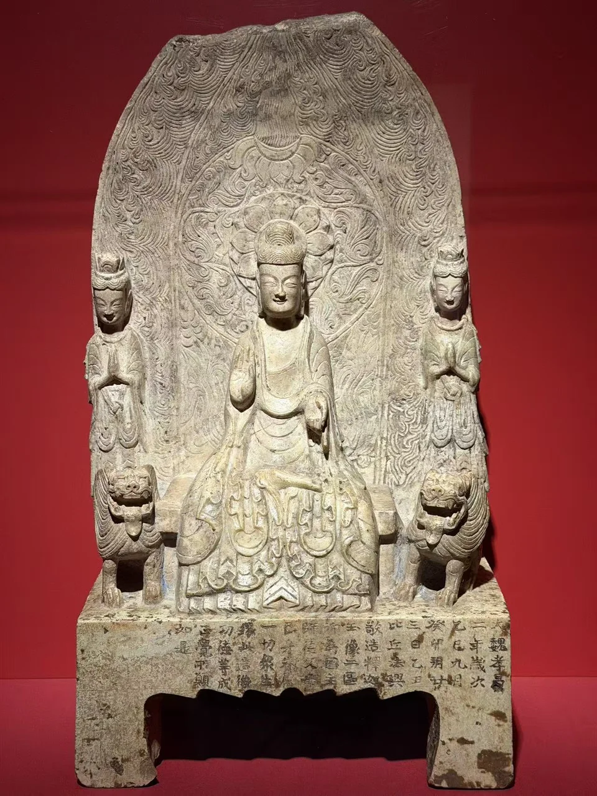
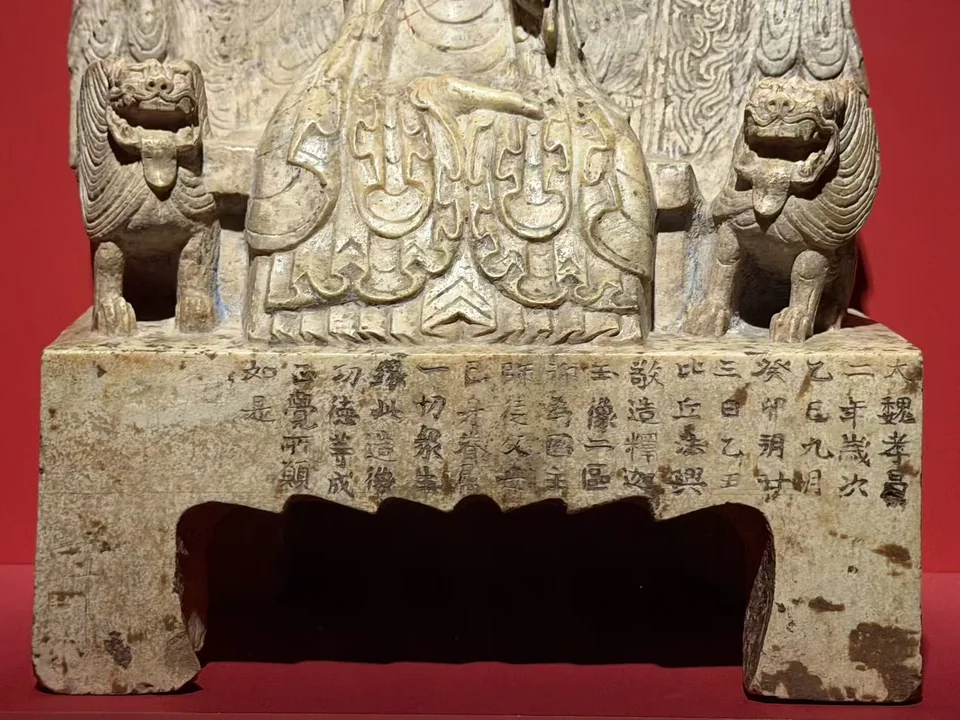
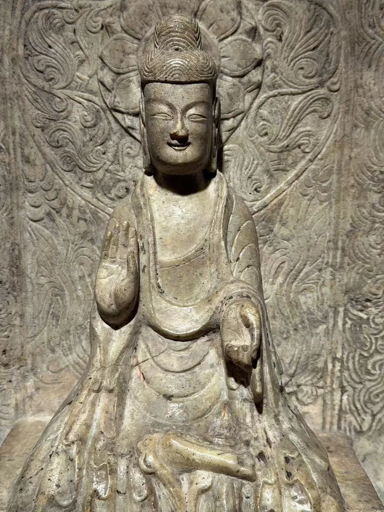
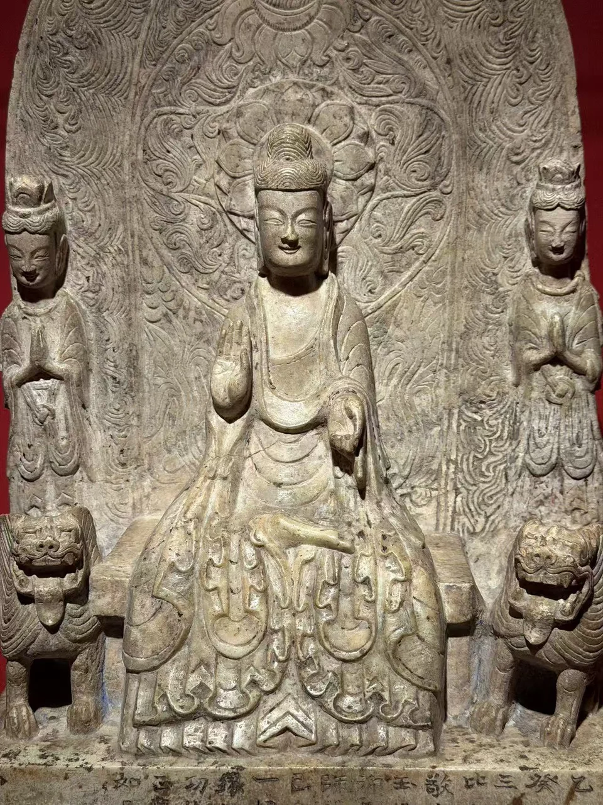
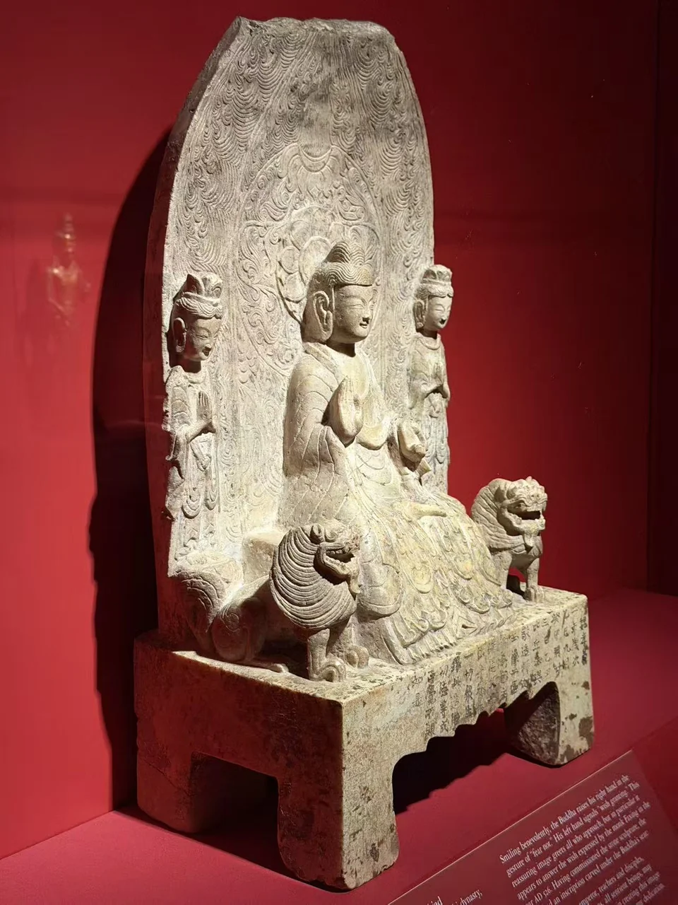
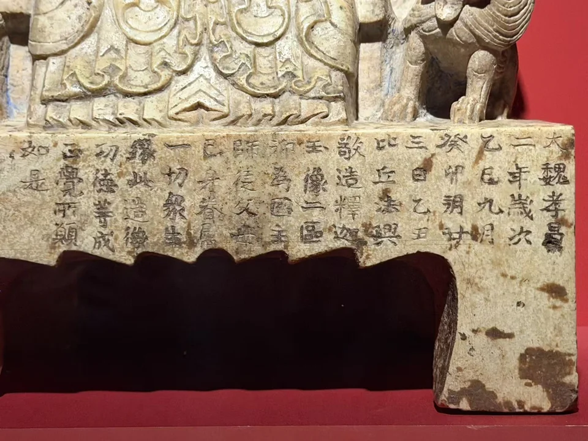
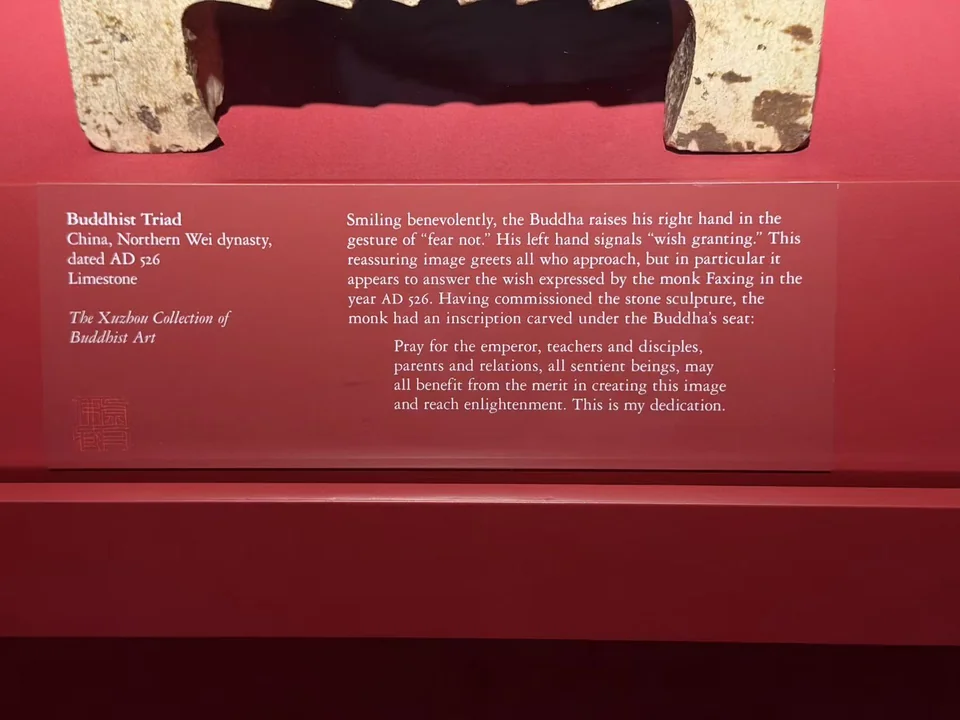

THE XUZHOU COLLECTION
佛三尊像
Buddhist Triad
衣摆、狮子和台座文字，把造像与供养连在一起。

- 地区
- 中国
- 年代
- 北魏，526年
- 材料
- 石灰岩
- 收藏
- 虚舟收藏（私人收藏）
- 观看地点
- 休斯顿美术馆（MFAH）
- 尺寸
- 高60.6厘米（据佳士得拍品页）
作品札记
释迦牟尼与两侧菩萨共用一片舟形背光。主尊右手施无畏印，左手施与愿印，两侧菩萨合十；膝前的衣摆一层层展开，垂向台座。莲花头光、火焰与忍冬纹围住人物，双狮守在座旁。佳士得将这种宽袍系带的衣着称为“褒衣博带”。从衣摆再向下看，便是刻在造像本体上的发愿文。
展签将造像记为北魏526年，由僧人法兴发愿制作。铭文中的“释迦”，使主尊身份有了文字依据；两侧菩萨的具体尊名尚未确定。这段题记同时保存了纪年、发愿者姓名和功德回向对象，让供养者的愿望与佛像一同留在石面上。
台座上的发愿文

大魏孝昌二年歲次乙巳九月癸卯朔廿三日乙丑，比丘法興敬造釋迦玉像二區，仰為國主師徒父母己身眷屬一切衆生，緣此造像功德，等成正覺，所願如是。
发愿文说了什么
比丘法兴恭敬地发愿造释迦像，为国主、师徒、父母、自身眷属及一切众生祈愿，愿大家凭借造像的功德，共同趋向觉悟。这便是他的心愿。
“缘此造像功德，等成正觉”把愿望扩展到一切众生，不止于个人平安。法兴是发愿造像者，铭文没有说他亲手雕刻；“玉像”则是原文用词，不据此把作品材质改为玉。
从藤田旧藏到公开拍卖
据佳士得记录，这件造像在1940年前已进入藤田收藏，后为大阪藤田美术馆旧藏。目前没有资料明确由藤田家哪一位成员购入。其后出版、展览与拍卖留下了几个可以追踪的节点。
递藏、展览与拍卖
1940年前
已进入藤田收藏，后为大阪藤田美术馆旧藏。
1977年
参加京都市美术馆《大东洋美术展》，编号22。
2017年3月15日
纽约佳士得“宗器宝绘——藤田美术馆藏中国古代艺术珍品”，第529号。估价USD 600,000–800,000，成交价USD 5,847,500。
休斯顿所见
以虚舟收藏私人藏品身份在MFAH展出。
出版记录
- 《藤田美術館名品圖錄》，1972年，编号208。
- 《大東洋美術展》，1977年，编号22。
- 金申，《中國歷代紀年佛像圖典》，北京，1994年，编号125。
- 金申，《海外及港臺藏歷代佛像—珍品紀年圖鑒》，太原，2007年，第49页。
题记与递藏：资料注
人名：中文拍品页及现场题记作“法興”，MFAH展签转写为Faxing。佳士得英文页的Xianxing与之不合，正文采用“法兴”；未据此补写其生平。
材料与尺寸：主栏沿用MFAH展签“石灰岩”。佳士得中文称“黄花石”，英文称marble；尚未取得检测资料，不判定哪一种名称更准确。高60.6厘米据拍品页。
同件对应：拍卖照片的背光、主尊衣摆、双狮、台座缺损及题记布局与现场照片相合。拍品中文题名为“北魏孝昌二年（公元526年）比丘法興造釋迦三尊黃花石像”。
现有资料不足以指定具体窟寺、雕刻作坊或出土地；2017年拍出也不等于当年由虚舟收藏购得。
其他角度与细部








现场展签与原始记录

- 题名
- Buddhist Triad
- 地区
- China
- 年代
- Northern Wei dynasty, dated AD 526
- 材料
- Limestone